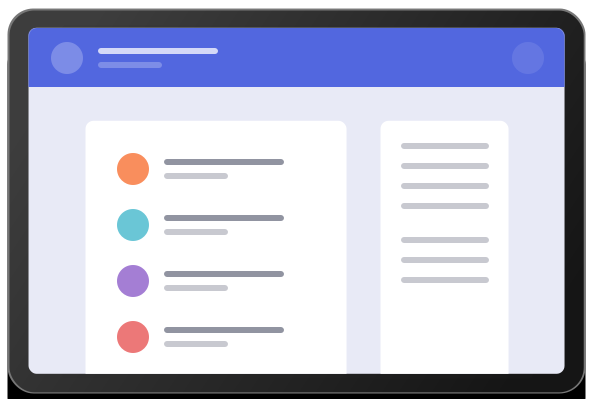

A Simple Bookmark Manager
A clean and simple interface to organize your favourite websites. Open a new browser tab and see your sites load instantly. Try it for free.
A clean and simple interface to organize your favourite websites. Open a new browser tab and see your sites load instantly. Try it for free.